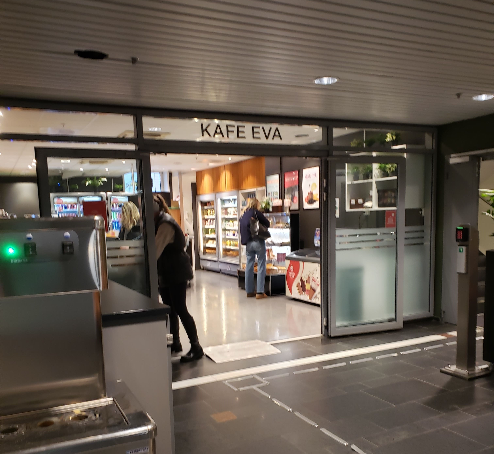
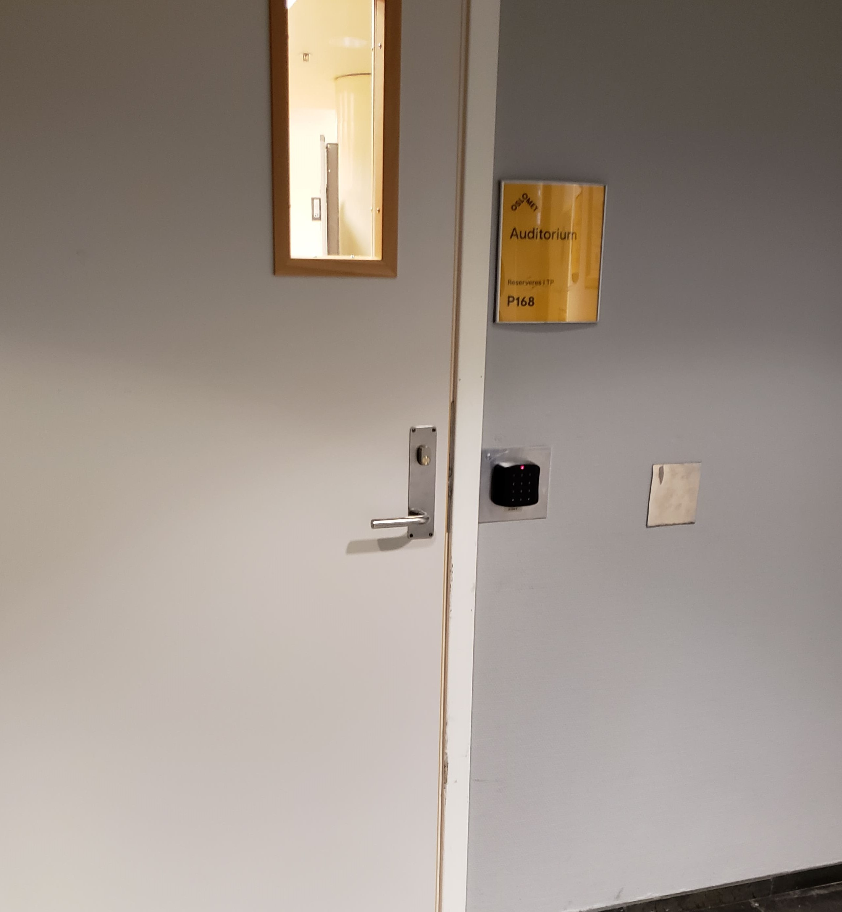

Pilestredet 48 Eva Balkes hus
Media and Communication Building
Pilestredet 48 is an important building within the OsloMet (Oslo Metropolitan University) campus. Located in the heart of Oslo, Norway, it serves a variety of academic and administrative purposes, contributing to the university's vibrant academic environment. This is the media building, so this building has lots of special rooms such as photo and audio studios. This building, just like the rest of them, has a big auditorium and a nice little canteen.
Studios
This is the media building, so having studios where students can practice media production is essential to their education. OsloMet provides 2 photo labs, two radio studios, one TV studio, and ten audio rooms. Only students who study media have access to these rooms to secure a time slot when they are available.
The Canteen
The canteen of P48 is a much smaller one compared to P32. It doesn't offer the hot homemade meals that most bigger canteens offer. It doesn't have a salad bar or anything similar, but there is plenty of sandwiches, snacks, and small foods for on the go. There is also an exceptional variety of energy drinks that are undoubtedly the best seller here.
The Auditorium
There are two auditoriums in this building. One of them seats 136 students, and the other one is a bit smaller with only 99 seats. They are standard OsloMet auditoriums with all of the necessary audio-visual equipment.
